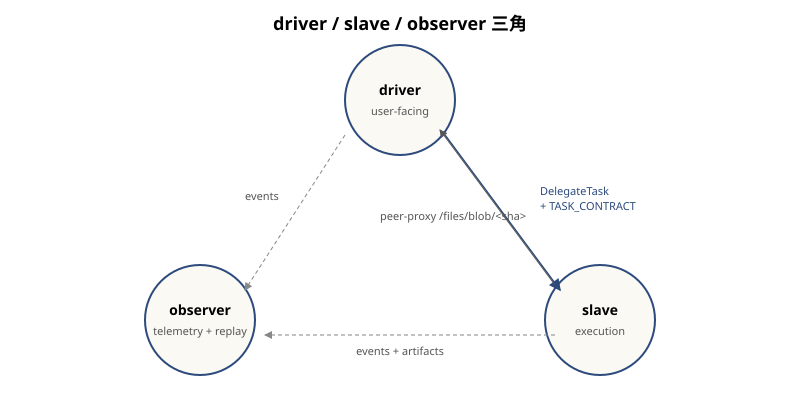

Tier — 角色分层视图
Tier 不是层,是角色。同一个进程可以同时扮演多个 tier; "driver/slave/observer"不是物理上的三类机器,而是工程上的三种职责。 这是本栈和"3-tier client/server"传统架构最大的区别。

三个角色
driver-tier — 用户面
双重身份:
- 在 agentserver 看:它是个 agent,有自己的
sandbox_id、出现在list_agents输出里。 - 在 loom 看:它是个 MCP server,被用户的 Claude Code(或 Codex CLI)当作 tool provider 调用。
用户的"我想要 X"自然语言,通过 Claude Code → driver MCP → driver 用 resolveTarget
挑 slave → DelegateTask 派出去。driver 自己还负责 fanout 编排——不需要单独的 master agent。
slave-tier — 执行
双重身份:
- 在 agentserver 看:它是 agent,公告
skills: [chat, bash, file, ...];poll task queue。 - 在 loom 看:它是 chat 模型(Claude/Codex)的运行时 + 一堆 MCP server 的 host。
关键:slave 的能力可以临时长出来。driver 看到 slave 缺某个 MCP 工具,
可以让 slave scaffold-mcp-server 写一个,过 mcp-acceptance 验真,
register_mcp 接入,然后 republish 自己的 AgentCard。下次任务可以直接调
(详见 Cycle C)。
observer-tier — 遥测 + 回放
双重身份:
- 在 agentserver 看:它是 events sink + workspace registry(也兼用户/工作区管理面)。
- 在 loom 看:它是 lazy-artifact relay(大文件不走 driver↔slave,走 observer 中转)+ capability publish 的接收方(slave 注册了新 MCP 后把规格抄送给 observer)。
关键:observer 与 control-plane 解耦。observer 短暂离线,driver 和 slave 照样能跑任务; 只是遥测会暂时丢,以及 lazy-artifact 模式下大文件传输会暂停。这个解耦是 lab/产品环境分离的基础。
tier 与 layer 的关系
这是一个常见混淆点:
| Layer | Tier |
|---|---|
| 水平,自底向上,每层是一种抽象 | 垂直,按职责,每 tier 是一种角色 |
| 每层都被所有 tier 用到 | 每个 tier 都跨多层(物理→模型一路用) |
| "调度层在 chat 之下" | "driver 是调度+应用+模型的协奏者" |
消息流
| 方向 | 协议 | 用途 |
|---|---|---|
| driver → slave | DelegateTask + TASK_CONTRACT envelope | 派任务(带 contract 校验) |
| slave → driver | peer-proxy /files/blob/<sha> | 取用户在 driver 上的文件 |
| slave → observer | events stream | 遥测、capability 公告 |
| driver → observer | events stream + artifact create/sync | 遥测、lazy-artifact 注册 |
| slave ↔ observer | lazy-artifact PUT/GET | 大文件中转(避免 driver↔slave 直传) |